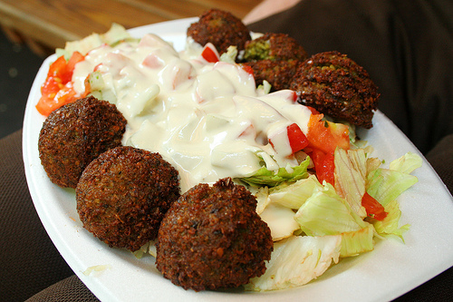

Das Original-Rezept vom Falafel Schah
Falls Ihr auf unsere superleckeren Falafel nicht bis zum Bundeslager warten wollt, könnt Ihr sie ganz einfach zuhause selbst machen.

"falafel plate" von roboppy (cc)
An dieser Stelle wird bald das Rezept stehen. Versucht es einfach später nochmal.